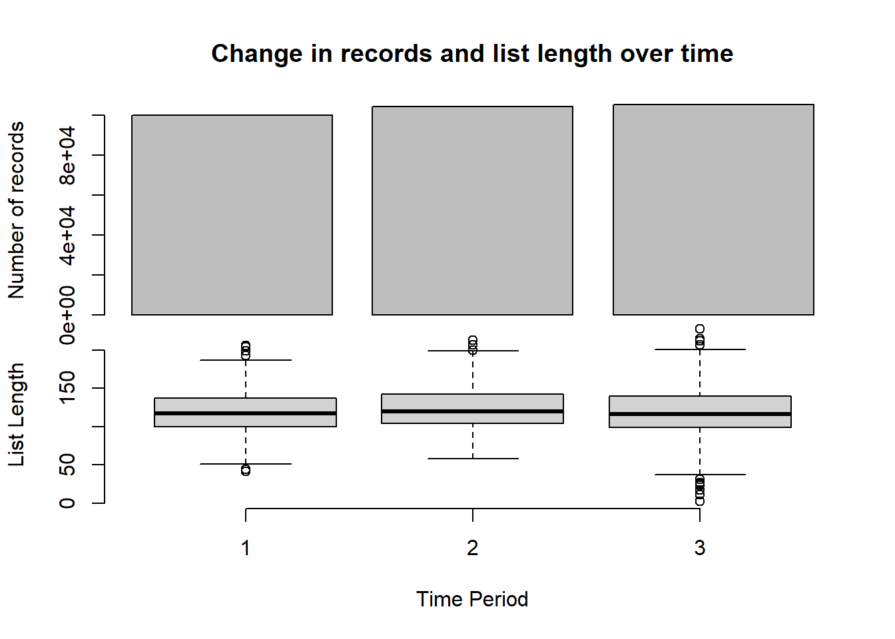
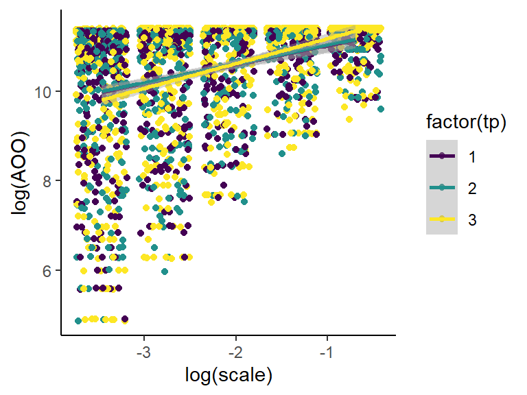
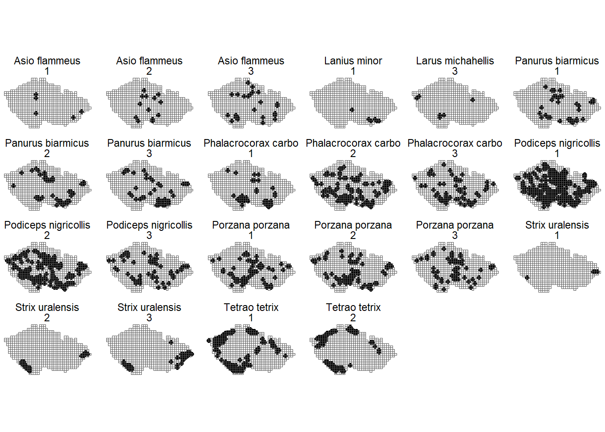
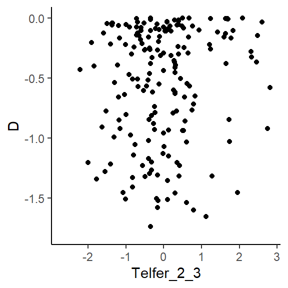
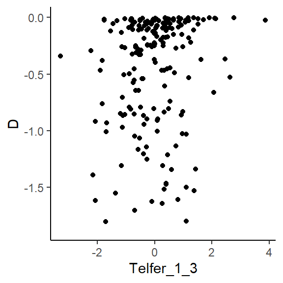
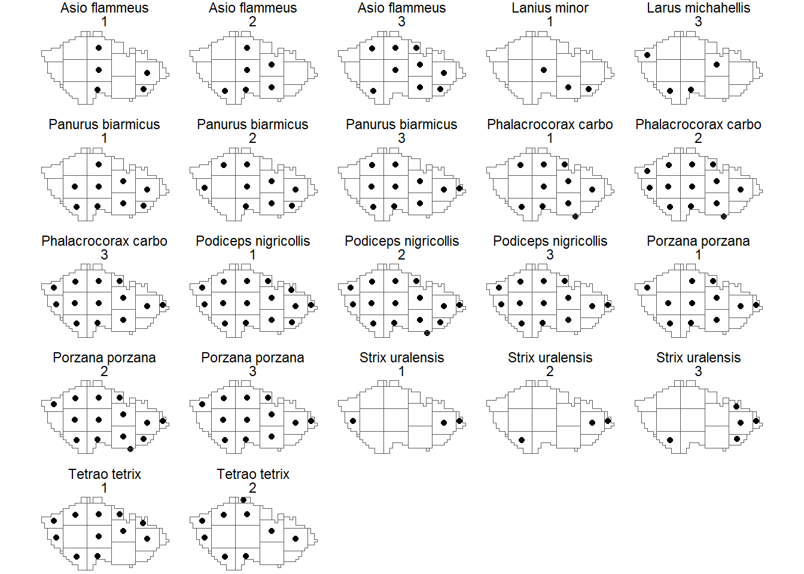
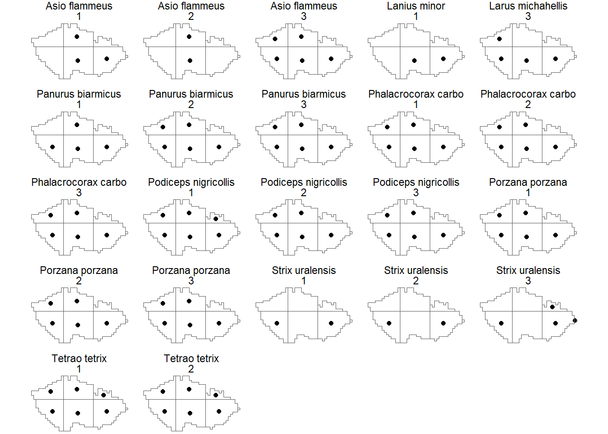
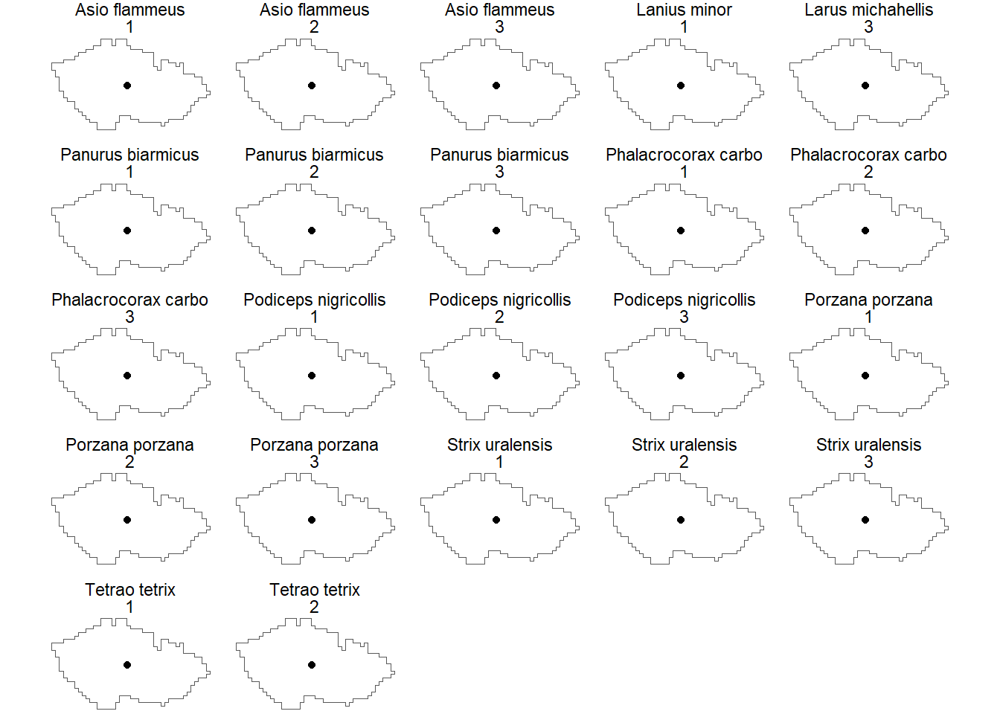
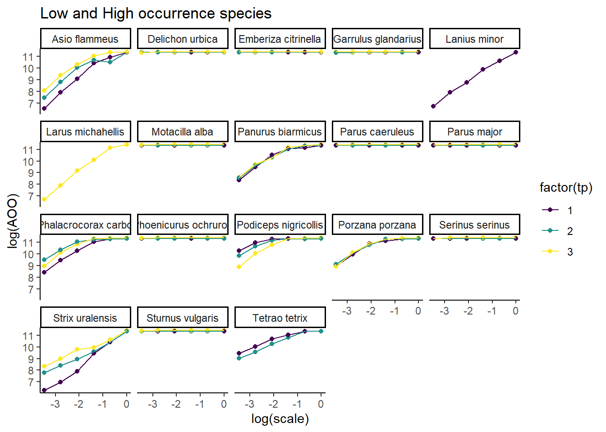
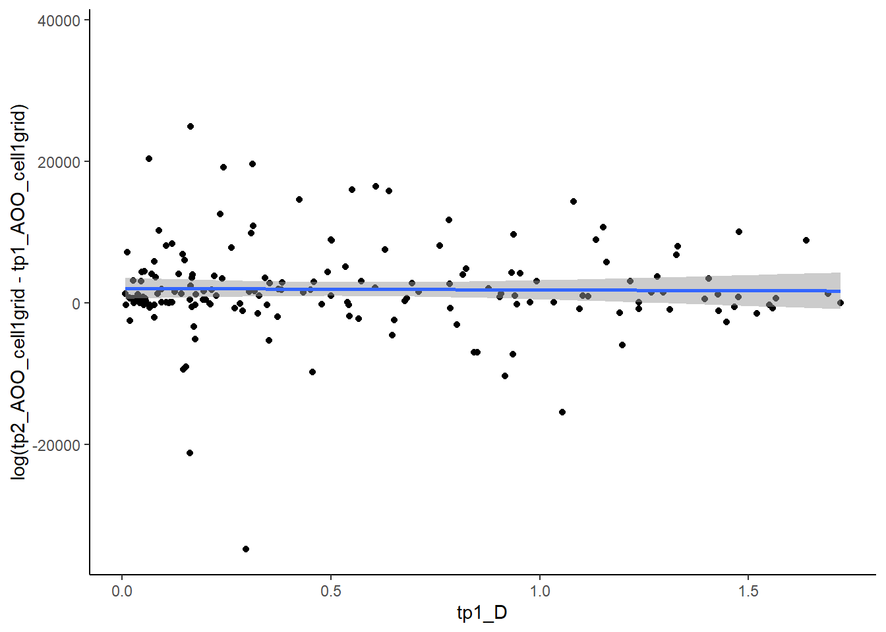

This script calculates different kinds of occupancy, scale-area relationships, fractal dimensions, telfer-index of change, log-Ratio plots.
This script also does some basic assessment of the atlas data (species richness, effort) across temporal and spatial scales
1. Reading the necessary libraries
gc()
used (Mb) gc trigger (Mb) max used (Mb)
Ncells 2174044 116.2 4424384 236.3 2748538 146.8
Vcells 3720692 28.4 8388608 64.0 5011532 38.3
rm(list=ls())# Spatial packageslibrary(sf) # spatial functionslibrary(tmap) # mapping# Data wrangling# library(tidyverse) # plotting & data manipulations (dplyr, ggplot2)library(dplyr)library(tidyr) library(ggplot2) library(rstatix) #stat tests for plotting with ggplot# Plottinglibrary(gridExtra) # plottinglibrary(viridis) # color palettelibrary(ggpubr) # plotting statslibrary(scales) # to adjust graph axislibrary(stringr) # library(sjPlot)library(AICcmodavg) # AICc model selection# Other packages# library(tictoc) # to measure the time it takes to run a code chunk
# folder path to atlas datasource_path <-"c:/Users/wolke/OneDrive - CZU v Praze/Datasets/Processed/Atlases/Replicated/Birds_Atlas_Czechia/"# folder path to output folderout_path <-"c:/Users/wolke/OneDrive - CZU v Praze/Dokumenty/GitHub/BEAST_General_Procedures/Project_Frieda/out/"# create path to read in data and grids from variablesdata_path <-paste0(source_path,"Birds_Atlas_Czechia_beast_data.rds")grid_path <-paste0(source_path,"Birds_Atlas_Czechia_grid.gpkg") # save names of layers from file (needed to read them in):layers <-st_layers(grid_path)$name# Define the desired order of factor levelsdesired_levels <-factor(layers, ordered = T, levels =c("cell1grid", "cell2grid", "cell4grid", "cell8grid", "cell16grid", "cellfullgrid"))
3. Reading the data
# Species datapresence_data <-readRDS(data_path)## sort the cell groupings ascendingpresence_data <- presence_data %>%mutate(cell_grouping =factor(cell_grouping, levels = desired_levels))## add column for time period (tp)start_times <-sort(unique(presence_data$start_year))end_times <-sort(unique(presence_data$end_year))time_periods <-data.frame(start_year = start_times,end_year = end_times, tp =seq_along(end_times))presence_data <-merge(presence_data, time_periods, by=c("start_year", "end_year"), all.x=T)# grid datagrid_list <-sapply(layers, function(i) {st_read(grid_path, paste(i), quiet =TRUE)}, simplify =FALSE)
Binary matrix:
# sites x species matrix for all 3 time periods and all 6 scales.binary_data <- presence_data %>%select(cell_label, verbatim_name, tp, cell_grouping) %>%group_by(tp, cell_grouping) %>%distinct() %>%mutate(value =1) %>%spread(verbatim_name, value, fill =0)dim(binary_data) #2690 sites x 240 species
### 4.2 Quality checks
Telfer : (quote from Sparta Vignette: https://github.com/BiologicalRecordsCentre/sparta/blob/master/vignettes/sparta_vignette.Rmd)
Telfer's change index is designed to assess the relative change in range size of species between two time periods ([Telfer et al, 2002](http://www.sciencedirect.com/science/article/pii/S0006320702000502#)). This is a simple method that is robust but has low power to detect trends where they exist. While this method is designed to compare two time periods, sparta can take many time periods and will complete all pairwise comparisons.
::: {.cell}
```{.r .cell-code}
# both unbiased
results <- sparta::dataDiagnostics(taxa = presence_data$verbatim_name,
site = presence_data$cell_label,
time_period = presence_data$tp,
progress_bar = FALSE)
Warning in errorChecks(taxa = taxa, site = site, time_period = time_period):
71777 out of 309463 observations will be removed as duplicates

## Linear model outputs ##
There is no detectable change in the number of records over time:
Estimate Std. Error t value Pr(>|t|)
(Intercept) 97879.33 2113.413 46.313400 0.01374377
time_period 2637.50 978.320 2.695948 0.22612421
There is no detectable change in list lengths over time:
Estimate Std. Error z value Pr(>|z|)
(Intercept) 4.7913501020 0.005441331 880.547507 0.0000000
time_period -0.0004810072 0.002504515 -0.192056 0.8476983
taxa Nsite_1.x Nsite_2.x Telfer_1_2 Nsite_1.y Nsite_3.x
1 Accipiter gentilis 624 606 -1.4023416 624 508
2 Accipiter nisus 616 631 0.6178684 616 589
3 Acrocephalus arundinaceus 338 358 -0.2851160 338 392
4 Acrocephalus dumetorum NA NA NA NA NA
5 Acrocephalus melanopogon NA NA NA NA NA
6 Acrocephalus paludicola NA NA NA NA NA
Telfer_1_3 Nsite_2.y Nsite_3.y Telfer_2_3
1 -1.8925836 606 508 -1.906786
2 -0.5529519 631 589 -1.501409
3 0.2094154 358 392 0.612922
4 NA NA NA NA
5 NA NA NA NA
6 NA 16 10 -1.003948
ggp1 <-ggplot(data = telfer_results) +geom_histogram(aes(x = Telfer_1_2), bins =20, bg ="lightgrey", col ="darkgrey")+theme_classic() +xlim(-4, 4)+ylim(0, 85)+# Add line for mean:geom_vline(xintercept =mean(telfer_results$Telfer_1_2, na.rm=T),col ="red",lwd =1) +# Add text for mean:annotate("text", x =mean(telfer_results$Telfer_1_2, na.rm=T) -2.5,y =mean(telfer_results$Telfer_1_2, na.rm=T) +80,label =paste("Mean =", round(mean(telfer_results$Telfer_1_2, na.rm=T),3) ),col ="red",size =6)+# Add line for mean:geom_vline(xintercept =median(telfer_results$Telfer_1_2, na.rm=T), col ="orange",lwd =1) +# Add text for mean:annotate("text", x =mean(telfer_results$Telfer_1_2, na.rm=T) -2.5,y =mean(telfer_results$Telfer_1_2, na.rm=T) +70,label =paste("Median =", round(median(telfer_results$Telfer_1_2, na.rm=T),3) ),col ="orange",size =6)ggp2 <-ggplot(data = telfer_results) +geom_histogram(aes(x = Telfer_2_3), bins =20, bg ="lightgrey", col ="darkgrey")+theme_classic() +# Add line for meangeom_vline(xintercept =mean(telfer_results$Telfer_2_3, na.rm=T), col ="red",lwd =1) +xlim(-4, 4)+ylim(0, 85)+# Add text for meanannotate("text", x =mean(telfer_results$Telfer_2_3, na.rm=T) -2.5,y =mean(telfer_results$Telfer_2_3, na.rm=T) +80,label =paste("Mean =", round(mean(telfer_results$Telfer_2_3, na.rm=T),3) ),col ="red",size =6)+# Add line for mean:geom_vline(xintercept =median(telfer_results$Telfer_1_2, na.rm=T), col ="orange",lwd =1) +# Add text for mean:annotate("text", x =mean(telfer_results$Telfer_2_3, na.rm=T) -2.5,y =mean(telfer_results$Telfer_2_3, na.rm=T) +70,label =paste("Median =", round(median(telfer_results$Telfer_2_3, na.rm=T),3) ),col ="orange",size =6)ggp3 <-ggplot(data = telfer_results) +geom_histogram(aes(x = Telfer_1_3), bins =20, bg ="lightgrey", col ="darkgrey")+theme_classic() +# Add line for mean:geom_vline(xintercept =mean(telfer_results$Telfer_1_3, na.rm=T), col ="red",lwd =1) +xlim(-4, 4)+ylim(0, 85)+annotate("text", # Add text for meanx =mean(telfer_results$Telfer_1_3, na.rm=T) -2.5,y =mean(telfer_results$Telfer_1_3, na.rm=T) +80,label =paste("Mean =", round(mean(telfer_results$Telfer_1_3, na.rm=T),3) ),col ="red",size =6)+# Add line for mean:geom_vline(xintercept =median(telfer_results$Telfer_1_3, na.rm=T), col ="orange",lwd =1) +# Add text for mean:annotate("text", # Add text for meanx =mean(telfer_results$Telfer_1_3, na.rm=T) -2.5,y =mean(telfer_results$Telfer_1_3, na.rm=T) +70,label =paste("Median =", round(median(telfer_results$Telfer_1_3, na.rm=T),3) ),col ="orange",size =6)ggp_telfer <-grid.arrange(ggp1, ggp2, ggp3)
There are several ways we could calculate the occupancy.
counting the number of occupied cells and calculating the proportion of all cells that were sampled
Summing the areas of all occupied cells and calculating the proportion from the whole sampled area
AOO based on IUCN standards: \(AOO = Nr.ofoccupied cells * area of single a cell\)
Modeling occupancy using occupancy-detection models
Question: Do all of these yield the same measure for fractal dimension?
Anyway, here we calculate both (1), (2) and (3). (4) Will be done at a later stage of my PhD
occ_data_list <-list()# We run the loop for each spatial grain (N = 8)for (i inseq_along(grid_list)){# subset the grid_list and work on a single spatial grain: map_atlas <- grid_list[[i]] # Calculate total sampled area per time period: map_atlas <- map_atlas %>%mutate(Total_area1 =sum(map_atlas$area1s),Total_area2 =sum(map_atlas$area2s),Total_area3 =sum(map_atlas$area3s))# Calculate total number of sampled cells per time period: Total_Ncells1 <- map_atlas %>%filter(area1s >0) %>%mutate(Total_Ncells1 =length(unique(cell_label))) %>%pull(Total_Ncells1) %>%unique() Total_Ncells2 <- map_atlas %>%filter(area2s >0) %>%mutate(Total_Ncells2 =length(unique(cell_label))) %>%pull(Total_Ncells2) %>%unique() Total_Ncells3 <- map_atlas %>%filter(area3s >0) %>%mutate(Total_Ncells3 =length(unique(cell_label))) %>%pull(Total_Ncells3) %>%unique() Total_Ncells <-data.frame(cell_grouping =unique(map_atlas$cell_grouping), Total_Ncells1, Total_Ncells2, Total_Ncells3) map_atlas <-merge(map_atlas, Total_Ncells) map_atlas %>%pivot_longer(cols=c('Total_Ncells1', 'Total_Ncells2', 'Total_Ncells3'),names_to='year',values_to='Total_N_cells')# subset the presence/absence data to the current spatial grain: pres_data <- presence_data %>%filter(cell_grouping ==unique(map_atlas$cell_grouping))# Merge sampled and unsampled cells for calculations: pres_data_full <-merge(pres_data, map_atlas, by =intersect(names(pres_data), names(map_atlas)), all = T) pres_data_full <-unique(pres_data_full)# Reduce columns needed for analysis: pres_data_full_reduced <- pres_data_full %>%ungroup() %>%mutate(area_sampled =case_when( tp ==1~ area1s, tp ==2~ area2s, tp ==3~ area3s),area_c =case_when( tp ==1~ area_cropped, tp ==2~ area_cropped, tp ==3~ area_cropped),Total_area =case_when( tp ==1~ Total_area1, tp ==2~ Total_area2, tp ==3~ Total_area3),Total_Ncells =case_when( tp ==1~ Total_Ncells1, tp ==2~ Total_Ncells2, tp ==3~ Total_Ncells3)) %>%select(verbatim_name, tp, cell_grouping, cell_label, area_sampled, area_c, Total_area, Total_Ncells) %>%filter_all(any_vars(!is.na(.)))## ========================================================================= #### ========================== Calculate Occupancy ========================= #### ========================================================================= ##occ_data <- pres_data_full_reduced %>%ungroup() %>%# Remove unsampled cells: filter(!is.na(verbatim_name)) %>%# Necessary grouping to calculate occupancy:group_by(verbatim_name, tp, cell_grouping) %>%unique() %>%# Calculate Occupancy:mutate(occupancy_area =sum(area_sampled)) %>%mutate(occupancy_Ncells =length(unique(cell_label))) %>%# Calculate AOO:mutate(AOO = occupancy_Ncells *mean(area_sampled)) %>%# Calculate relative Occupancy:mutate(relative_occupancy_area = occupancy_area/Total_area) %>%mutate(relative_occupancy_Ncells = occupancy_Ncells/Total_Ncells) %>%# Round values to 2 digits after the comma:mutate(relative_occupancy_area =round(relative_occupancy_area, 3)) %>%mutate(relative_occupancy_Ncells =round(relative_occupancy_Ncells, 3)) %>%# Remove duplicated rows:distinct() # save to list:occ_data_list[[i]] <- occ_data}# Bind to one dataframe:occ_data_full_df <- plyr::rbind.fill(occ_data_list, fill=T)# occ_data_full_df %>% filter_all(any_vars(is.na(.)))# create scale column as a fraction of the full country:occ_data_full_df2 <- occ_data_full_df %>%mutate(scale =case_when( cell_grouping =="cell1grid"~1/32, cell_grouping =="cell2grid"~1/16, cell_grouping =="cell4grid"~1/8, cell_grouping =="cell8grid"~1/4, cell_grouping =="cell16grid"~1/2 , cell_grouping =="cellfullgrid"~1)) %>%unique()gc()
used (Mb) gc trigger (Mb) max used (Mb)
Ncells 6394880 341.6 19995171 1067.9 19995171 1067.9
Vcells 58038758 442.9 111317637 849.3 111317637 849.3
# save.image(paste0(out_path, "Scale_Area_Curves_Occu_calc.RData"))# save reduced version of this to file:occ_data_red <- occ_data_full_df2 %>%select(-c(cell_label, area_sampled, area_c)) %>%distinct() # occ_data_red %>% write.csv(paste0(out_path, "Occupancy_table.csv"))
s = scale where s = 1 is scale at which whole object is covered
We need at least 2 different scales
How fractal is the data?
The straighter the line, the more fractal it is.
The following analyses all depend on the assumption that species distributions are fractal, therefore we test it first by fitting a linear and a non-linear model and comparing AICc scores to determine which model better fits the data
# exclude saturated species for all calculations # (that require a linear relationship between scale and occupancy.)dd <- occ_data_red %>%filter(relative_occupancy_area !=1& relative_occupancy_Ncells !=1) %>%# exclude saturated scalesunique() %>%filter_at(vars(c(cell_grouping, scale, AOO, occupancy_area, occupancy_Ncells, relative_occupancy_area, relative_occupancy_Ncells)), any_vars(!is.na(.)))## Looks linear for communities !!dd %>%ggplot(aes(y =log(AOO), x =log(scale)), col =factor(tp))+geom_jitter(aes(col =factor(tp)))+geom_smooth(aes(col =factor(tp)), method ="lm", formula = y ~ x )+scale_color_viridis(discrete=T)+theme_classic()

## Loop through years and species ###AIC_list <-list()m_df_all <-list()m_df_all_years <-list()m_df1_list <-list()m_df1_list_years <-list()AIC_list_years <-list()for (y inseq_along(unique(dd$tp))) { # //// filter by year //// # dd_temp <- dd %>%filter(tp == y)for (i inseq_along(unique(dd_temp$verbatim_name))) { # //// filter by taxa //// # sp <-unique(dd_temp$verbatim_name)[i] model_dd <- dd_temp %>%filter(verbatim_name == sp)# //// Linear Models //// ## one for each measure of occupancy (N = 5) # m1_1 <-lm(log(AOO) ~log(scale), data = model_dd)## For other AOO measures: m1_2 <-lm(log(occupancy_area) ~log(scale), data = model_dd) m1_3 <-lm(log(occupancy_Ncells) ~log(scale), data = model_dd) m1_4 <-lm(log(relative_occupancy_area) ~log(scale), data = model_dd) m1_5 <-lm(log(relative_occupancy_Ncells) ~log(scale), data = model_dd)# Make data frame for each species (Linear = m_df1)# naming convention follows linear formula: y = mx + b # (i.e., b = intercept, m = slope) m_df1 <-data.frame(row.names =c("linear"), verbatim_name = sp,tp = y, m_AOO = m1_1$coefficients[2],b_AOO = m1_1$coefficients[1],r2_AOO =summary(m1_1)$r.squared,m_occArea = m1_2$coefficients[2],b_occArea = m1_2$coefficients[1],r2_occArea =summary(m1_2)$r.squared,m_occNcells = m1_3$coefficients[2],b_occNcells = m1_3$coefficients[1],r2_occNcells =summary(m1_3)$r.squared,m_occRelArea = m1_4$coefficients[2],b_occRelArea = m1_4$coefficients[1],r2_occRelArea =summary(m1_4)$r.squared,m_occRelNcells = m1_5$coefficients[2],b_occRelNcells = m1_5$coefficients[1],r2_occRelNcells =summary(m1_5)$r.squared ) m_df1_list[[i]] <- m_df1 #create backup dataframe from linear models so we can save it to file### Break =============if(nrow(model_dd) <=2) {cat("Skipping data", sp[i], "as it doesn't have the required length\n") m_df_all[[i]] <- m_df1next}# //// Poly-Models //// # m2_1 <-lm(log(AOO) ~poly(scale, 2), data = model_dd)## For other AOO measures: m2_2 <-lm(log(occupancy_area) ~poly(scale, 2), data = model_dd) m2_3 <-lm(log(occupancy_Ncells) ~poly(scale, 2), data = model_dd) m2_4 <-lm(log(relative_occupancy_area) ~poly(scale, 2), data = model_dd) m2_5 <-lm(log(relative_occupancy_Ncells) ~poly(scale, 2), data = model_dd)# Make data frame for each species (Poly = m_df2)# naming convention follows linear formula: y = mx + b # (i.e., b = intercept, m = slope) m_df2 <-data.frame(row.names =c("poly"), verbatim_name = sp,tp = y, m_AOO = m2_1$coefficients[2],b_AOO = m2_1$coefficients[1],r2_AOO =summary(m2_1)$r.squared,m_occArea = m2_2$coefficients[2],b_occArea = m2_2$coefficients[1],r2_occArea =summary(m2_2)$r.squared,m_occNcells = m2_3$coefficients[2],b_occNcells = m2_3$coefficients[1],r2_occNcells =summary(m2_3)$r.squared,m_occRelArea = m2_4$coefficients[2],b_occRelArea = m2_4$coefficients[1],r2_occRelArea =summary(m2_4)$r.squared,m_occRelNcells = m2_5$coefficients[2],b_occRelNcells = m2_5$coefficients[1],r2_occRelNcells =summary(m2_5)$r.squared )# Model selection based on AICc ===================================== #### models_list_AOO <-list(m1_1, m2_1) models_list_occArea <-list(m1_2, m2_2) models_list_occNcells <-list(m1_3, m2_3) models_list_occRelArea <-list(m1_4, m2_4) models_list_occRelNcells <-list(m1_5, m2_5)# AIC 1 AIC_AOO <-data.frame(aictab(models_list_AOO, modnames =c("linear", "poly")),verbatim_name = sp,model ="AOO") # AIC 2 AIC_occArea <-data.frame(aictab(models_list_occArea, modnames =c("linear", "poly")),verbatim_name = sp,model ="occArea") # AIC 3 AIC_occNcells <-data.frame(aictab(models_list_occNcells, modnames =c("linear", "poly")),verbatim_name = sp,model ="occNcells") # AIC 4 AIC_occRelArea <-data.frame(aictab(models_list_occRelArea, modnames =c("linear", "poly")),verbatim_name = sp,model ="occRelArea")# AIC 5 AIC_occRelNcells <-data.frame(aictab(models_list_occRelNcells, modnames =c("linear", "poly")),verbatim_name = sp,model ="occRelNcells") AIC_tab <-rbind(AIC_AOO, AIC_occArea, AIC_occNcells, AIC_occRelArea, AIC_occRelNcells) AIC_list[[i]] <- AIC_tab m_df1$Modnames <-rownames(m_df1) m_df2$Modnames <-rownames(m_df2) m_df3 <-rbind(m_df1, m_df2) m_df3$Modnames <-rownames(m_df3) m_df4 <-merge(m_df3, AIC_tab, by =c("Modnames", "verbatim_name")) m_df_all[[i]] <- m_df4rm(m_df1, m_df2) } m_df1_list_df <- plyr::rbind.fill(m_df1_list, fill = T) m_df_all2 <- plyr::rbind.fill(m_df_all, fill = T) AIC_list_taxa <- plyr::rbind.fill(AIC_list, fill = T) m_df_all_years[[y]] <- m_df_all2 m_df1_list_years[[y]] <- m_df1_list_df AIC_list_years[[y]] <- AIC_list_taxa}
Skipping data NA as it doesn't have the required length
Skipping data NA as it doesn't have the required length
Skipping data NA as it doesn't have the required length
Skipping data NA as it doesn't have the required length
Skipping data NA as it doesn't have the required length
Skipping data NA as it doesn't have the required length
Skipping data NA as it doesn't have the required length
Skipping data NA as it doesn't have the required length
Skipping data NA as it doesn't have the required length
Skipping data NA as it doesn't have the required length
Skipping data NA as it doesn't have the required length
Skipping data NA as it doesn't have the required length
Skipping data NA as it doesn't have the required length
Skipping data NA as it doesn't have the required length
Skipping data NA as it doesn't have the required length
Skipping data NA as it doesn't have the required length
Skipping data NA as it doesn't have the required length
Skipping data NA as it doesn't have the required length
Skipping data NA as it doesn't have the required length
Skipping data NA as it doesn't have the required length
Skipping data NA as it doesn't have the required length
Skipping data NA as it doesn't have the required length
Skipping data NA as it doesn't have the required length
Skipping data NA as it doesn't have the required length
Skipping data NA as it doesn't have the required length
Skipping data NA as it doesn't have the required length
Skipping data NA as it doesn't have the required length
Skipping data NA as it doesn't have the required length
Skipping data NA as it doesn't have the required length
Skipping data NA as it doesn't have the required length
Skipping data NA as it doesn't have the required length
Skipping data NA as it doesn't have the required length
Skipping data NA as it doesn't have the required length
Skipping data NA as it doesn't have the required length
Skipping data NA as it doesn't have the required length
Skipping data NA as it doesn't have the required length
Skipping data NA as it doesn't have the required length
Skipping data NA as it doesn't have the required length
Skipping data NA as it doesn't have the required length
Skipping data NA as it doesn't have the required length
Skipping data NA as it doesn't have the required length
Skipping data NA as it doesn't have the required length
Skipping data NA as it doesn't have the required length
Skipping data NA as it doesn't have the required length
Skipping data NA as it doesn't have the required length
Warning in summary.lm(m1_3): essentially perfect fit: summary may be unreliable
Warning in summary.lm(m2_3): essentially perfect fit: summary may be unreliable
Warning in summary.lm(m1_3): essentially perfect fit: summary may be unreliable
Warning in summary.lm(m2_3): essentially perfect fit: summary may be unreliable
Warning in summary.lm(m1_3): essentially perfect fit: summary may be unreliable
Warning in summary.lm(m2_3): essentially perfect fit: summary may be unreliable
Skipping data Turdus merula as it doesn't have the required length
Skipping data NA as it doesn't have the required length
Skipping data NA as it doesn't have the required length
Skipping data NA as it doesn't have the required length
Skipping data NA as it doesn't have the required length
Skipping data NA as it doesn't have the required length
Warning in summary.lm(m1_1): essentially perfect fit: summary may be unreliable
Warning in summary.lm(m1_2): essentially perfect fit: summary may be unreliable
Warning in summary.lm(m1_4): essentially perfect fit: summary may be unreliable
Warning in summary.lm(m2_1): essentially perfect fit: summary may be unreliable
Warning in summary.lm(m2_2): essentially perfect fit: summary may be unreliable
Warning in summary.lm(m2_4): essentially perfect fit: summary may be unreliable
Skipping data NA as it doesn't have the required length
Skipping data NA as it doesn't have the required length
Skipping data NA as it doesn't have the required length
Skipping data NA as it doesn't have the required length
Skipping data NA as it doesn't have the required length
Skipping data NA as it doesn't have the required length
Skipping data NA as it doesn't have the required length
Skipping data NA as it doesn't have the required length
Skipping data NA as it doesn't have the required length
Skipping data NA as it doesn't have the required length
Skipping data NA as it doesn't have the required length
Skipping data NA as it doesn't have the required length
Skipping data NA as it doesn't have the required length
Skipping data NA as it doesn't have the required length
Skipping data NA as it doesn't have the required length
Skipping data NA as it doesn't have the required length
Skipping data NA as it doesn't have the required length
Skipping data NA as it doesn't have the required length
Skipping data NA as it doesn't have the required length
Skipping data NA as it doesn't have the required length
Skipping data NA as it doesn't have the required length
Skipping data NA as it doesn't have the required length
Skipping data NA as it doesn't have the required length
Skipping data NA as it doesn't have the required length
Skipping data NA as it doesn't have the required length
Skipping data NA as it doesn't have the required length
Skipping data NA as it doesn't have the required length
Skipping data NA as it doesn't have the required length
Skipping data NA as it doesn't have the required length
Skipping data NA as it doesn't have the required length
Skipping data NA as it doesn't have the required length
Skipping data NA as it doesn't have the required length
Skipping data NA as it doesn't have the required length
Skipping data NA as it doesn't have the required length
Skipping data NA as it doesn't have the required length
Skipping data NA as it doesn't have the required length
Skipping data NA as it doesn't have the required length
Skipping data NA as it doesn't have the required length
Skipping data NA as it doesn't have the required length
Skipping data NA as it doesn't have the required length
Skipping data NA as it doesn't have the required length
Skipping data NA as it doesn't have the required length
Warning in summary.lm(m1_3): essentially perfect fit: summary may be unreliable
Warning in summary.lm(m2_3): essentially perfect fit: summary may be unreliable
Warning in summary.lm(m1_3): essentially perfect fit: summary may be unreliable
Warning in summary.lm(m2_3): essentially perfect fit: summary may be unreliable
Warning in summary.lm(m1_3): essentially perfect fit: summary may be unreliable
Warning in summary.lm(m2_3): essentially perfect fit: summary may be unreliable
Warning in summary.lm(m1_3): essentially perfect fit: summary may be unreliable
Warning in summary.lm(m2_3): essentially perfect fit: summary may be unreliable
Warning in summary.lm(m1_3): essentially perfect fit: summary may be unreliable
Warning in summary.lm(m2_3): essentially perfect fit: summary may be unreliable
Warning in summary.lm(m1_3): essentially perfect fit: summary may be unreliable
Warning in summary.lm(m2_3): essentially perfect fit: summary may be unreliable
Warning in summary.lm(m1_3): essentially perfect fit: summary may be unreliable
Warning in summary.lm(m2_3): essentially perfect fit: summary may be unreliable
## Bind list elements to dataframe:m_df_all_years2 <- plyr::rbind.fill(m_df_all_years, fill = T) %>%distinct()m_df1_list_years2 <- plyr::rbind.fill(m_df1_list_years, fill = T) %>%distinct()m_df_all_years2$model <-as.factor(m_df_all_years2$model)
why are there so many NAs in it right now??? to do: find error
`summarise()` has grouped output by 'verbatim_name', 'tp', 'Modnames'. You can
override using the `.groups` argument.
`summarise()` has grouped output by 'Modnames'. You can override using the
`.groups` argument.
# A tibble: 10 × 5
# Groups: Modnames [2]
Modnames model n mean_cumWT Delta_AICc
<chr> <fct> <dbl> <dbl> <dbl>
1 linear AOO 282 1 0
2 linear occArea 282 1 0
3 linear occNcells 262 1 0
4 linear occRelArea 282 1 0
5 linear occRelNcells 282 1 0
6 poly AOO 180 1 0
7 poly occArea 180 1 0
8 poly occNcells 181 1 0
9 poly occRelArea 180 1 0
10 poly occRelNcells 181 1 0
## Compare linear vs. poly AICc selection# round to 3 digits:m_df_all_years2 <- m_df_all_years2 %>%mutate(across(where(is.numeric), ~round(., 3)))# Model selection based on AICc and weight:m_df_all_years2 %>%group_by(factor(Modnames), tp, model) %>%filter(Delta_AICc ==0) %>%filter(AICcWt >0.6) %>%summarize(n=n(),meanAICcWt =mean(AICcWt))
`summarise()` has grouped output by 'factor(Modnames)', 'tp'. You can override
using the `.groups` argument.
# A tibble: 30 × 5
# Groups: factor(Modnames), tp [6]
`factor(Modnames)` tp model n meanAICcWt
<fct> <dbl> <fct> <int> <dbl>
1 linear 1 AOO 55 1
2 linear 1 occArea 55 1
3 linear 1 occNcells 52 1
4 linear 1 occRelArea 55 1
5 linear 1 occRelNcells 55 1
6 linear 2 AOO 58 1
7 linear 2 occArea 58 1
8 linear 2 occNcells 55 1
9 linear 2 occRelArea 58 1
10 linear 2 occRelNcells 58 1
# ℹ 20 more rows
labs(title ="AICc-based model selectio: Linear vs. Poly", subtitle ="to determine deviation from linear relationship \ni.e. deviation from fractal assumption")
$title
[1] "AICc-based model selectio: Linear vs. Poly"
$subtitle
[1] "to determine deviation from linear relationship \ni.e. deviation from fractal assumption"
attr(,"class")
[1] "labels"
# Which are the species that have a poly-relationship? =================== ####poly_species <- m_df_all_years2 %>%group_by( tp) %>%filter(Delta_AICc ==0) %>%filter(AICcWt >0.6) %>%filter(Modnames =="poly") %>%pull(verbatim_name) %>%unique()presence_data_sf %>%filter(verbatim_name %in%sample(poly_species, 3)) %>%filter(cell_grouping =="cell1grid") %>%ggplot()+geom_sf()+geom_sf(data = grid_list[[1]], fill ="NA")+facet_wrap(verbatim_name+tp~.)+theme_void()
# occ_data_full_df %>% # filter(verbatim_name %in% poly_species) %>% # select(-c(cell_label, cell_grouping, area_sampled, area_c, Total_area, Total_Ncells)) %>%# ggplot()+# geom_point(aes(y = relative_occupancy_Ncells, x = Modnames))# occ_data_full_df %>% filter(verbatim_name %in% poly_species) %>%# ggplot(aes(x = log(scale), y = poly(AOO,2), col = verbatim_name, group=verbatim_name))+# geom_point()+# geom_smooth(method = "lm", formula = y ~ poly(x, 2), se = T, alpha = 0.5)+# scale_color_viridis(discrete = T)+# facet_wrap(verbatim_name~.)+# theme_classic()+# labs(title = "lm(log(AOO) ~ poly(scale, 2), data = model_dd)")# # # occ_data_full_df %>% filter(verbatim_name %in% poly_species) %>%# ggplot(aes(x = log(scale), y = log(AOO), col = verbatim_name))+# geom_point()+# geom_smooth(method = "lm", formula = y ~ poly(x, 2), se = T, alpha = 0.5)+# scale_color_viridis(discrete = T)+# facet_wrap(verbatim_name~.)+# theme_classic()+# labs(title = "lm(log(AOO) ~ poly(scale, 2), data = model_dd)")
Summary Table 2: Differences in D between measures of occupancy
2.1) How do the results (slope) of the different ways to calculate occupancy differ?
--> keeping only the linear model results for m (!) (that’s why it’s called “subset”)
Registered S3 method overwritten by 'GGally':
method from
+.gg ggplot2
Warning in cor(x, y): the standard deviation is zero
Warning in cor(x, y): the standard deviation is zero
Warning in cor(x, y): the standard deviation is zero
Warning in cor(x, y): the standard deviation is zero
Warning in cor(x, y): the standard deviation is zero
Warning in cor(x, y): the standard deviation is zero
Warning in cor(x, y): the standard deviation is zero
Warning in cor(x, y): the standard deviation is zero
Warning in cor(x, y): the standard deviation is zero
Warning in cor(x, y): the standard deviation is zero
Warning in cor(x, y): the standard deviation is zero
Warning in cor(x, y): the standard deviation is zero
Warning in cor(x, y): the standard deviation is zero
Warning in cor(x, y): the standard deviation is zero
Warning in cor(x, y): the standard deviation is zero
1.1) Which species are very common (> 0.9 relative occupancy at smallest grain)
# Plot the map of some example species:presence_data_sf %>%filter(verbatim_name %in% high_occu_sp_sample) %>%filter(cell_grouping =="cell1grid") %>%ggplot()+geom_sf()+geom_sf(data = grid_list[[1]], fill ="NA")+facet_wrap(verbatim_name+tp~.)+theme_void()
1.2) Which species are very rare (< 0.15 relative occupancy at smallest grain)
# Plot the map of some example species ================================== ####presence_data_sf %>%filter(verbatim_name %in% low_occu_sp_sample) %>%filter(cell_grouping =="cell1grid") %>%ggplot()+geom_sf()+geom_sf(data = grid_list[[1]], fill ="NA")+facet_wrap(verbatim_name+tp~., ncol =6)+theme_void()

ggsave(filename ="low_occu.pdf",path =paste0(out_path, "Figs"),device = cairo_pdf,height =210,width =297,units ="mm")### Other scales:presence_data_sf_allgrains %>%filter(verbatim_name %in%low_occu_sp_sample) %>%filter(cell_grouping =="cell2grid") %>%ggplot()+geom_sf()+geom_sf(data = grid_list[[2]], fill ="NA")+facet_wrap(verbatim_name+tp~.)+theme_void()

presence_data_sf_allgrains %>%filter(verbatim_name %in%low_occu_sp_sample) %>%filter(cell_grouping =="cell4grid") %>%ggplot()+geom_sf()+geom_sf(data = grid_list[[3]], fill ="NA")+facet_wrap(verbatim_name+tp~.)+theme_void()

presence_data_sf_allgrains %>%filter(verbatim_name %in%low_occu_sp_sample) %>%filter(cell_grouping =="cell8grid") %>%ggplot()+geom_sf()+geom_sf(data = grid_list[[4]], fill ="NA")+facet_wrap(verbatim_name+tp~.)+theme_void()

presence_data_sf_allgrains %>%filter(verbatim_name %in%low_occu_sp_sample) %>%filter(cell_grouping =="cell16grid") %>%ggplot()+geom_sf()+geom_sf(data = grid_list[[5]], fill ="NA")+facet_wrap(verbatim_name+tp~.)+theme_void()

presence_data_sf_allgrains %>%filter(verbatim_name %in%low_occu_sp_sample) %>%filter(cell_grouping =="cellfullgrid") %>%ggplot()+geom_sf()+geom_sf(data = grid_list[[6]], fill ="NA")+facet_wrap(verbatim_name+tp~.)+theme_void()

###presence_data_sf %>%filter(verbatim_name %in%low_occu_sp_sample) %>%filter(cell_grouping =="cell1grid") %>%filter(tp ==3) %>%ggplot()+geom_sf()+geom_sf(data = grid_list[[1]], fill ="NA")+facet_wrap(verbatim_name~., ncol =3)+theme_void()+labs(title ="Low occurrence species (tp = 3)")
occ_data_red3 %>%filter(verbatim_name %in% spec) %>%ggplot(aes(y =log(AOO), x =log(scale), col =factor(tp)))+geom_point()+geom_line()+theme_classic()+scale_color_viridis(discrete = T)+facet_wrap(verbatim_name~.)+annotate("text", label =paste(), size =4, x =15, y =5)+labs(title ="Low and High occurrence species")

occ_data_red3 %>%filter(verbatim_name %in% low_occu_sp_sample) %>%ggplot(aes(y =log(AOO), x =log(scale), col =factor(tp)))+geom_point()+geom_line()+theme_classic()+facet_wrap(verbatim_name~.)+scale_color_viridis(discrete = T)+annotate("text", label =paste(), size =4, x =15, y =5)+labs(title ="Low occurrence species")

occ_data_red3 %>%filter(verbatim_name %in%unique(high_occu$verbatim_name)[1:9]) %>%ggplot(aes(y =log(AOO), x =log(scale), col =factor(tp)))+geom_point()+geom_line()+theme_classic()+scale_color_viridis(discrete = T)+facet_wrap(verbatim_name~.)+annotate("text", label =paste(), size =4, x =15, y =5)+labs(title ="High occurrence species")
Let’s look at two example species that have low occupancy and see if we can translate what’s going on from the static patterns. Let’s compare with telfer index of change.
Species 1 : Grus grus (AOO between years differs quite a lot, but AOO increases over the years) Species 2 : Falco vespertinus (occurs only in 2 grid cells in tp1 and tp3 and those grid cells differ a lot)
Results:
Grus grus (temporally increasing species) decreases in D (slope) over time in D.
Falco vespertinus (temporally decreasing species) increases in D (slope) over time.
# Example species: # =========================================================================== ### one that differs quite a lot in AOO between years:# this one scales nicely between cell_groupings: 1-4 for both time periods. # Looks like it is comparable.# let's see:s_linear <-c("cell1grid", "cell2grid", "cell4grid", "cell8grid")occ_data_red3 %>%filter(verbatim_name =="Grus grus") %>%unique() %>%#filter(cell_grouping %in% s_linear) %>% ggplot(aes(x =log(scale), y =log(AOO), color =factor(tp)))+geom_point()+theme_classic()+geom_line()+labs(title ="Grus grus")+scale_color_viridis(discrete=T)
Warning in simpleLoess(y, x, w, span, degree = degree, parametric = parametric,
: reciprocal condition number 0
Warning in simpleLoess(y, x, w, span, degree = degree, parametric = parametric,
: There are other near singularities as well. 0.23493
Warning in predLoess(object$y, object$x, newx = if (is.null(newdata)) object$x
else if (is.data.frame(newdata))
as.matrix(model.frame(delete.response(terms(object)), : span too small. fewer
data values than degrees of freedom.
Warning in predLoess(object$y, object$x, newx = if (is.null(newdata)) object$x
else if (is.data.frame(newdata))
as.matrix(model.frame(delete.response(terms(object)), : pseudoinverse used at
0.39713
Warning in predLoess(object$y, object$x, newx = if (is.null(newdata)) object$x
else if (is.data.frame(newdata))
as.matrix(model.frame(delete.response(terms(object)), : neighborhood radius
0.41604
Warning in predLoess(object$y, object$x, newx = if (is.null(newdata)) object$x
else if (is.data.frame(newdata))
as.matrix(model.frame(delete.response(terms(object)), : reciprocal condition
number 0
Warning in predLoess(object$y, object$x, newx = if (is.null(newdata)) object$x
else if (is.data.frame(newdata))
as.matrix(model.frame(delete.response(terms(object)), : There are other near
singularities as well. 0.23493
Warning in max(ids, na.rm = TRUE): no non-missing arguments to max; returning
-Inf
taxa Nsite_1.x Nsite_2.x Telfer_1_2 Nsite_1.y Nsite_3.x
1 Falco vespertinus NA NA NA 12 11
Telfer_1_3 Nsite_2.y Nsite_3.y Telfer_2_3
1 -0.6534855 NA NA NA
# Telfer_1_3 = -0.6534855 ## Another species that has a nice linear relationship until one pointocc_data_red3 %>%filter(verbatim_name =="Falco vespertinus") %>%unique() %>%ggplot(aes(x =log(scale), y =log(AOO), color =factor(tp)))+geom_point()+theme_classic()+geom_line()+labs(title ="Falco vespertinus")+scale_color_viridis(discrete=T)
occ_data_red_wide %>%ggplot(aes(y = log_R2, x =-tp1_D_cell1grid))+geom_point()+xlab("tp1_D")+ylab("log(tp2_AOO_cell1grid - tp1_AOO_cell1grid)")+geom_smooth(method ="lm", formula = y ~ x, se = T, alpha =0.5)+theme_classic()
occ_data_red_wide %>%ggplot(aes(y = log_R1_3, x =-tp1_D_cell1grid))+geom_point()+ylab(expression("log"~frac("tp2_AOO_cell1grid", "tp1_AOO_cell1grid")))+xlab("tp1_D")+geom_smooth(method ="lm", formula = y ~ x, se = T, alpha =0.5)+theme_classic()
occ_data_red_wide %>%ggplot(aes(y = log_R2_3, x =-tp1_D_cell1grid))+geom_point()+xlab("tp1_D")+ylab("log(tp2_AOO_cell1grid - tp1_AOO_cell1grid)")+geom_smooth(method ="lm", formula = y ~ x, se = T, alpha =0.5)+theme_classic()